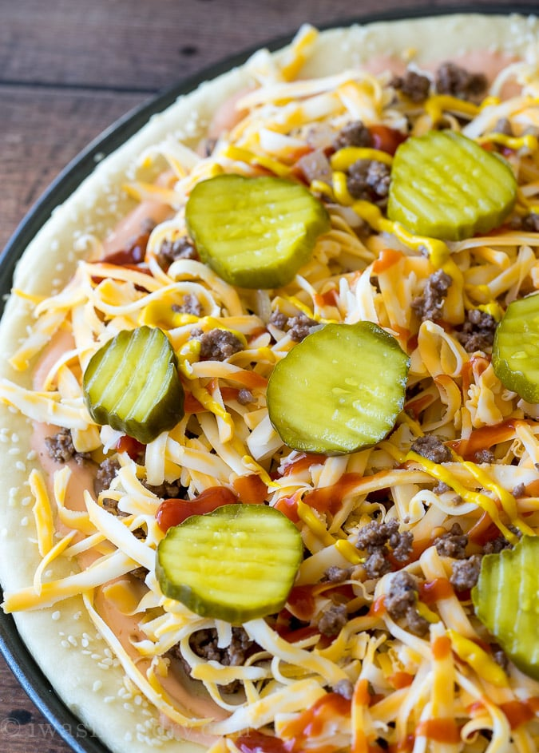

King's Cuisine I
Quadzilla Burger
Ingredients
Pizza Dough
Sesame Seeds
Ground Beef
Onion
Cheddar Cheese
Mayo
Ketchup
Mustard
Pickles
Mayo
3 ((Parmesan.American and Cheddar Jack cheese slices)) of Cheese slices

- Prepare the buns by
- Spread your pizza dough out onto a lightly greased pizza pan or flat baking sheet.
- brushe the edges with a little egg wash sprinkled with sesame seed
- Mix the ketchup, mayo and a touch of hot sauce together.
- Brown some hamburger with some onions and some special seasonings, then sprinkle that over the top.
- Follow it up with some shredded cheese, a drizzle of ketchup and mustard and a few slices of dill pickles
- Bake the pizza in a 425 degree oven for just 12 to 15 minutes, until the crust is golden brown and the middle is bubbly and cooked through.